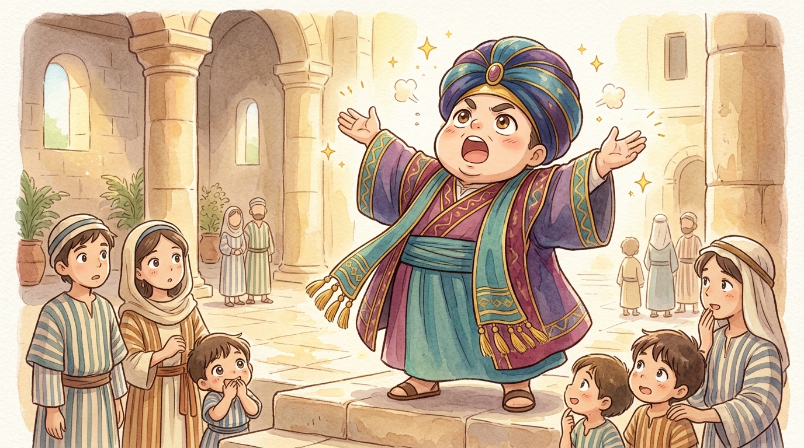
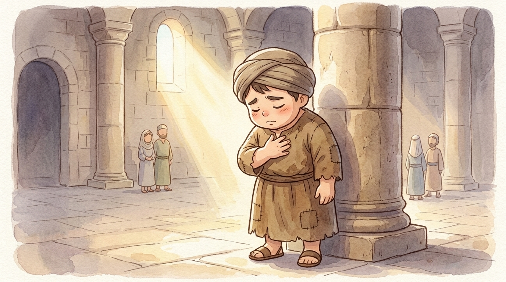

Welcome, sports fans, to the Great Prayer Contest! Jesus told this parable for a very particular audience — Luke says it was for people "who were confident of their own righteousness and looked down on everyone else."1 Two very different men are climbing the temple steps to pray. Everybody watching thinks they know exactly who will win. Everybody watching is wrong.
Meet the contestants
In lane one: the Pharisee! The crowd goes wild! Pharisees were the religious superstars of the day — people who took God's law seriously and kept it carefully. This one is an over-achiever even by Pharisee standards, as we're about to hear.2
In lane two: the tax collector. The crowd… boos. Loudly. Tax collectors worked for the Roman occupiers, collecting taxes from their own neighbors — and many grabbed extra for themselves. To most people, "tax collector" simply meant traitor and cheat.3 What's HE even doing at the temple?
The crowd's scoreboard: Pharisee 100 points (obeys everything, fasts, gives) · Tax collector 0 points (works for Rome, probably overcharges). This one's over before it starts, folks!
The Pharisee steps up
The Pharisee strides confidently to the front, takes his position where everyone can see him, and prays — the Bible says — about himself. Count how many times he says "I":
Five "I"s, one glance down his nose — and notice something strange: he didn't actually ask God for anything. Not forgiveness, not help, not wisdom. His prayer was really just a trophy speech with "God" stuck on the front. To be fair, his list was true! He really did fast and give generously — more than the law even required. But somewhere along the way, his prayers had become mirrors: everywhere he looked, he only saw himself.

The tax collector steps up… sort of
Far at the back — as far from the front as he can get — stands the tax collector. He won't come closer; he feels he has no right. He can't even lift his eyes from the floor. He beats his chest — in that world, a sign of the deepest sorrow — and out come seven words. Seven. That's the whole prayer:
No list of achievements. No comparing himself with anybody. No excuses either — he doesn't say "the Romans made me do it" or "everyone cheats a little." Just the honest truth, handed to God: I've done wrong. I need mercy. Please.

The final whistle
And now Jesus announces the result — and you can almost hear the crowd's jaws hitting the temple floor:
"I tell you that this man — the tax collector — went home justified before God, rather than the other. For everyone who lifts himself up will be humbled, and everyone who humbles himself will be lifted up."
"Justified" is a courtroom word — it means declared right with God. Forgiven. Clean. Welcomed.4 The man with the perfect religious résumé went home exactly as he came. The man with nothing but seven honest words went home with the greatest gift in the universe.
Turns out God was never counting fasting points or comparing anybody with anybody. His scoreboard measures the heart: honesty over showing off, humility over pride, asking over boasting. Final score: the humble prayer wins. It always does.
Why did the Pharisee lose?
Not because obeying God is bad — obeying God is wonderful! He lost because his goodness had curdled into pride. He didn't come to meet God; he came to award himself a medal. He compared himself with the tax collector instead of standing honestly before God. Comparing down always makes us look great. Standing before God makes us honest — and honesty is the door that mercy walks through.
So when you pray tonight, remember the great upset at the temple. You don't need fancy words, a perfect record, or anybody to compare yourself with. Come honestly, come humbly — God never turns away a humble heart. Seven words were enough for the tax collector. They're enough for you too. 🙏